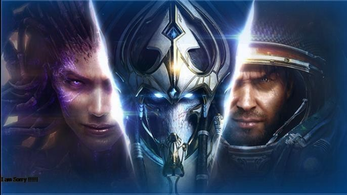

5 เกมยิงปืน FPS สนุก ๆ เล่นเพลิน ในปี 2024 บน PC
Real-Time Strategy (RTS) เป็นแนวเกมที่ให้ผู้เล่นควบคุมทั้งการบริหารทรัพยากร การสร้างฐาน และการ บังคับกองทัพในเวลาจริง ผู้เล่นต้องวางแผนกลยุทธ์และต่อสู้กับศัตรูในเวลาเป็นส่วนใหญ่ โดยมักจะมีการต่อสู้และการสร้างทรัพยากรเป็น จุดกำเนิดสำคัญของเกมในแนวนี้ รูปแบบการเล่นในเวลาจริงทำให้ผู้เล่นต้องทำเร็วและตัดสินใจอย่างรวดเร็วเกม RTS มักจะให้ผู้เล่นมี ฐานะเป็นผู้คุมทรัพยากร การกำหนดเส้นทางของการพัฒนา การสร้างและจัดการกองทัพ และการต่อสู้เพื่อควบคุมพื้นที่หรือต่อสู้เพื่อความ สำเร็จในวัตถุประสงค์ที่กำหนดไว้ในเกม การวางแผนและการตัดสินใจที่ดีเป็นสิ่งสำคัญในการเล่น RTS โดยทั่วไป เกมแนวนี้มักมีส่วนของการ สร้างฐาน การเจรจาเป็นบ้าน การบังคับกองทัพ การพัฒนาเทคโนโลยี และการนำกองทัพของตนเองเข้าสู่การสู้รบกับศัตรู ทั้งด้วยความสามารถ ทางกลยุทธ์และการรักษาความสมดุลในการใช้ทรัพยากรและกองทัพของตนในเวลาเป็นส่วนใหญ่ของการเล่นในแนว RTS นี้
1.StarCraft II
"StarCraft II" เป็นเกมแนว Real-Time Strategy (RTS) ที่ถือว่าเป็นหนึ่งในเกมที่สำคัญและน่าสนใจที่สุดในประวัติศาสตร์ ของวงการเกม RTS บน PC มันถือเป็นภูมิแนวของแนวเกม RTS ด้วยระบบการเล่นที่ค่อนข้างซับซ้อนและแข่งขันอย่างมีความเข้มแข็ง เกมตั้งแต่ช่วงเริ่มต้นมีสองภาคหลักคือ "Wings of Liberty" และ "Heart of the Swarm" ซึ่งในภาคแรกนี้เล่าเรื่องราวของ Jim Raynor และ Kerrigan ในภาคที่สองเน้นไปที่ Kerrigan ซึ่งเป็นตัวละครสำคัญในเรื่องราวของเกมสตอรี่ของ StarCraft II สร้างเป็นแบบของภูมิปัญญาทางเทคโนโลยีอวกาศและการต่อสู้ระหว่างต่างดาว มีชุมชนแข่งขันที่ใหญ่และเต็มไปด้วยความสามารถทาง กลยุทธ์นอกจากนี้ "StarCraft II" ยังเป็นเกมที่เน้น eSports อย่างมาก มีการแข่งขันกว่าแสนดอลลาร์ในระดับโลก และเป็นที่ ยอมรับในวงการ eSports ด้วยการแข่งขันที่มีความเป็นมืออาชีพที่สูงขึ้นไปอย่างต่อเนื่อง
2.Warcraft III

"Warcraft III" เป็นเกมแนว Real-Time Strategy (RTS) ที่เป็นที่รู้จักและมีความสำคัญอย่างมากในโลกของเกมบน PC มันถือเป็นหนึ่งในเกมที่สร้างมาตรฐานและเป็นแนวโน้มในอุตสาหกรรมเกม RTS ด้วยกลยุทธ์การเล่นที่หลากหลายและตัวละครที่น่าสนใจ "Warcraft III" เป็นตัวเกมที่ยังคงเป็นฐานของโหมด Custom Map หรือเล่นแผนที่ที่สร้างโดยผู้เล่นเอง (Custom Map) โดยเฉพาะโหมด Defense of the Ancients (DotA) ซึ่งนำไปสู่การเกิดเกม MOBA ที่มีความนิยมในภายหลัง เนื่องจากสตอรี่ของ "Warcraft III" ที่ยาวนาน และมีความสนุกสนาน มันได้สร้างโลกและตัวละครที่มีประสิทธิภาพในแง่ของกลยุทธ์และทักษะพิเศษนอกจากนี้ "Warcraft III" ยังเป็นเกมที่เน้น eSports มีการแข่งขันที่สูงขึ้นไปยังระดับโลกและยังมีชุมชนผู้เล่นที่ใหญ่และมีกิจกรรมต่าง ๆ อย่างต่อเนื่องในชุมชนของเกม
3."Command & Conquer: Red Alert 2
"Command & Conquer: Red Alert 2" เป็นเกมแนว Real-Time Strategy (RTS) ที่เป็นที่รู้จักและเป็นที่นิยมในวงการเกม RTS บน PC มันเป็นภาคที่ต่อจากเกม Red Alert ซึ่งเป็นส่วนหนึ่งของซีรี่ส์ "Command & Conquer" ที่เป็นที่รู้จักอย่างกว้างขวางเกมนี้เกิดขึ้นในอาณาจักร ของสหภาพโซเวียตที่ถูกแบ่งแยกออกเป็นสองฝ่าย ฝ่ายลาดตระเวนเดินทางย้อนกลับเวลาเพื่อเปลี่ยนแปลงประวัติศาสตร์ ฝ่ายซอเวียตอยากก่อตั้ง จีพีเอส (GPS) ซึ่งเป็นตัวประทับทางจิตใจ และผู้เล่นจะต้องเล่นในฐานะของฝ่ายพันธมิตรที่ต่อต้าน GPSเกมนี้มีการควบคุมการแข่งขันระหว่างหน่วย ทหารและการก่อสร้างฐาน การควบคุมทรัพยากร โดยมีการนำเอากลยุทธ์และการวางแผนเข้าไปในการเล่น เป็นเกมที่ได้รับการประทับใจในด้านกลยุทธ์ และเนื้อหาเนื้อเรื่องที่น่าสนใจในแนวสงครามและการเมืองในยุคที่แตกต่างไปจากปกติ
4.Battle Realms

"Battle Realms" ซึ่งเป็นเกมแนว Real-Time Strategy (RTS) ที่เป็นที่รู้จักในวงการเกมบน PC ซึ่งเกมนี้มีเนื้อหาและระบบการเล่นที่น่า สนใจ นี่คือสรุปเกี่ยวกับ "Battle Realms":"Battle Realms" เป็นเกม RTS ที่ให้คุณควบคุมกองทัพของคุณในการต่อสู้ในโลกแห่งศึกนี้ โดยมีความแตกต่างจากเกม RTS ทั่วไปโดยมีสไตล์ศึกสงครามแบบยุคกลางศตวรรษที่มีธีมและพื้นที่ทางวิศวกรรมของศิลปะและวัฒนธรรมญี่ปุ่น เกมนี้มีการใช้สมองในการวางแผนและการปรับตัวเพื่อสร้างกองทัพที่แข็งแกร่ง มีตัวละครและหน่วยทหารที่หลากหลายที่มีความสามารถและ ความแตกต่างกัน ทำให้ผู้เล่นต้องใช้กลยุทธ์และความชาญฉลาดในการใช้งานหน่วยทหารต่าง ๆ ให้เหมาะสมกับสถานการณ์ "Battle Realms" เน้นไปที่กลยุทธ์และการสร้างฐานที่ยั่งยืน และมีชุมชนแฟนๆที่ยังคงรักสนุกสนานกับเกมนี้อยู่ด้วย
5.Total War: Warhammer II
"Total War: Warhammer II" เป็นเกมคอมพิวเตอร์แนว Turn-Based Strategy และ Real-Time Tactics ที่รวมระบบการเล่นของเกม Total War กับโลกแฟนตาซีของ Warhammer ระหว่างกันเกมนี้มุ่งเน้นให้ผู้เล่นควบคุมกองทัพและอาณาจักรของตน ในโลกแห่ง Warhammer ที่เต็มไปด้วยเหล่าตัวละครและสัตว์เทพที่มีพลังเวทมนตร์อันใหญ่ ผู้เล่นจะควบคุมแต่ละฝ่ายที่มีเนื้อหาและตัวละครที่มาจาก Warhammer โดยมีการควบคุมทั้งทรัพยากรทางเศรษฐกิจ การจัดการกองทัพ และการต่อสู้ในแบบ Real-Time Battles ที่ยิ่งใหญ่และสุดยอดเกมมีโลกแห่ง Warhammer ที่มีหลายแผนที่และสถานที่ที่ผู้เล่นสามารถสำรวจและครอบครอง โดยมีเหล่าสัตว์เทพและตัวละครที่มีความพิเศษและความสามารถเฉพาะ และการนำพาแต่ละฝ่ายผ่านแผนที่เคลื่อนไหวให้เป็นผู้ครองจริงๆของโลก Warhammer ที่ยิ่งใหญ่ให้ได้